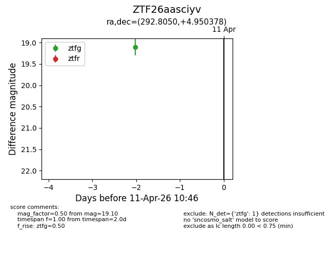
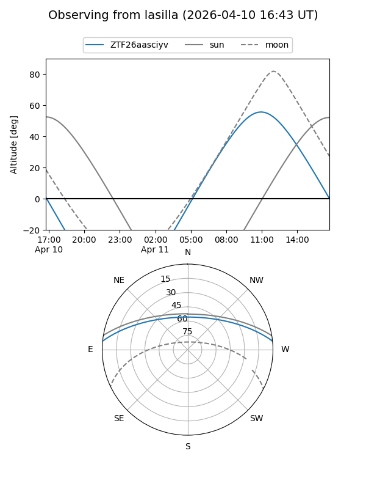
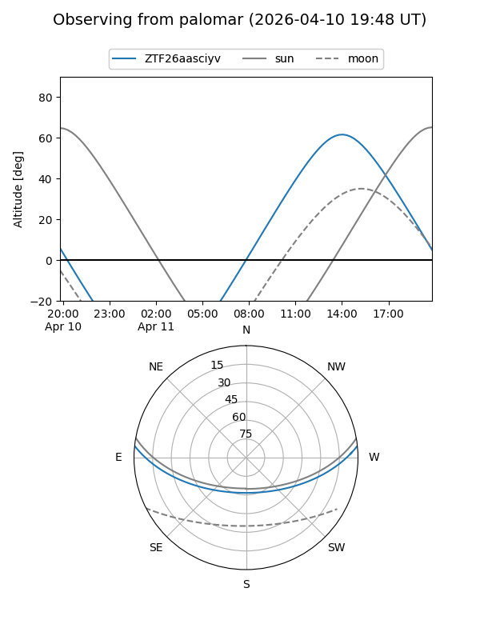

ZTF26aasciyv
Target ZTF26aasciyv at 2026-04-11 10:54
Aliases and brokers:
FINK: link
Lasair: link
ALeRCE: link
alt names
ZTF26aasciyv (ztf,fink_ztf)
Coordinates:
equatorial (ra, dec) = 292.8050,+4.95038
equatorial (HMS+DMS) = 19:31:13.19,+04:57:01.36
galactic (l, b) = (41.9226,-6.53379)
Flags:
Photometry:
last ztfg=19.10
1 ztfg detections
Lightcurve

Visibility


Additional plots